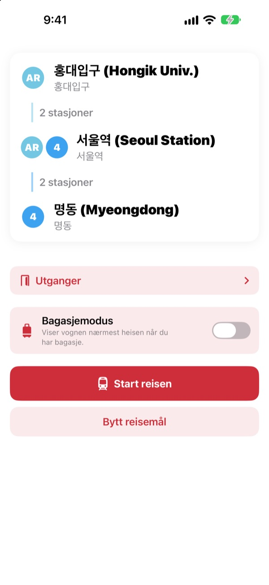
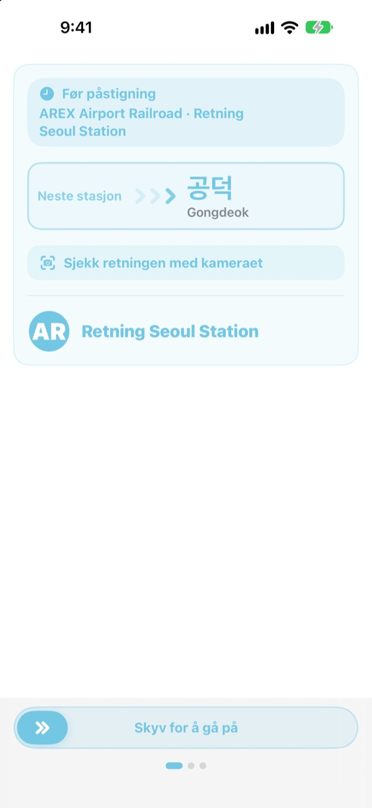
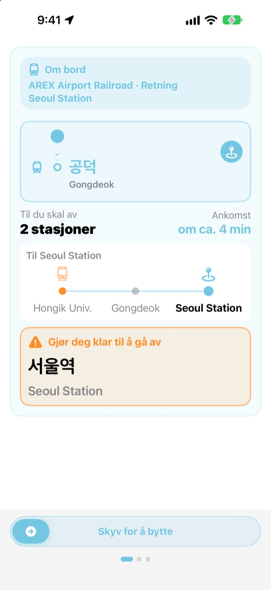
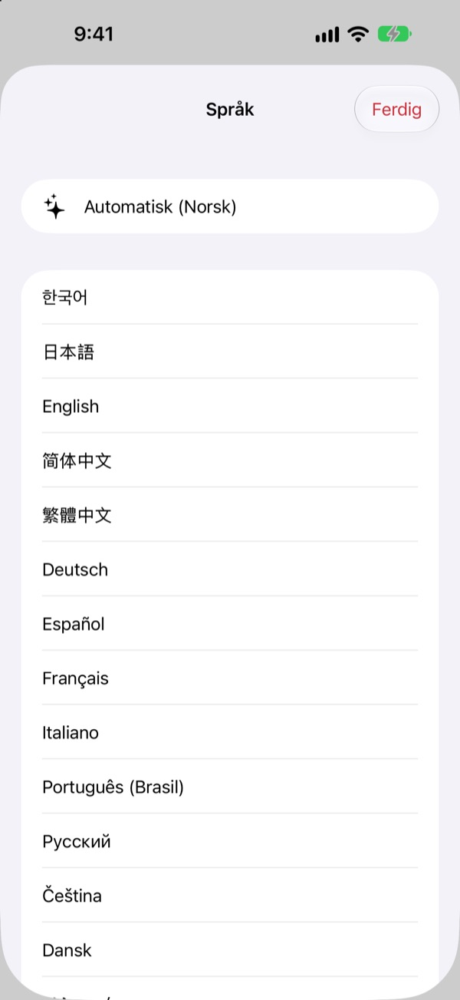

Riktig plattform.
Riktig stasjon.
Velg start og mål, og KORA forteller hvilket tog du skal ta, skrevet nøyaktig som på skiltet på plattformen. Under turen følger den stasjonen din og sier fra når du skal av.
Rutesøk, kjøreretning og ankomster i sanntid er gratis.

Ta en prøvetur
Du står på Hongik Univ. på AREX-linjen. Velg hvor du skal av, og trykk på Start reisen for å se togets retning og varslene om å gå av, akkurat som i appen.
Har du stått på plattformen uten å vite hvilket tog du skal ta?
Kartapper viser linjen, men på plattformen henger det bare skilt med navn på stasjoner du aldri har hørt om. Tar du feil retning, må du flere stasjoner tilbake. Går du glipp av meldingen, kjører du forbi. KORA kaller toget ditt det samme som skiltet og varsler deg før stasjonen din.
Med skiltets egne ord
Toget du skal ta, vises nøyaktig slik destinasjonen står på plattformen og på toget. Usikker? Rett kameraet mot skiltet på plattformen eller togets destinasjonsskilt, så sier KORA med en gang om det er riktig retning.
Teksten gjenkjennes helt på iPhonen din.

Aldri kjør forbi igjen
KORA kombinerer ankomster i sanntid, GPS, togets avganger og stopp og meldingene om bord for å vite hvor du er. Når stasjonen nærmer seg, får du «Gjør deg klar til å gå av» og så «Gå av nå!» med vibrasjon.
Fremdriften vises også på låst skjerm og i Dynamic Island.

23 språk, koreanske navn beholdt
Bruk hele appen på 23 språk. Den starter på språket til iPhonen din. Stasjonsnavn vises på koreansk ved siden av den latinske skrivemåten fra skiltene, så du kjenner dem igjen på plattformen.

Kom i gang på tre steg
- 1
Velg start
GPS finner nærmeste stasjon, eller du velger selv.
- 2
Velg mål
Bytter, stasjoner og riktig tog vises med en gang.
- 3
Trykk på Start reisen
Skjermen og en vibrasjon sier fra når du skal av.
Hva tillatelsene brukes til
- Posisjon
- Finne nærmeste stasjon
- Kamera
- Lese skilt og destinasjonsskilt for å sjekke retningen
- Mikrofon og talegjenkjenning
- Fange opp stasjonsnavn og dørside i meldingene om bord
- Bevegelse og trening
- Merke avganger og stopp så gjeldende stasjon blir mer presis
Alle tillatelser er frivillige. Uten dem velger du stasjoner selv og får likevel rute og varsler om å gå av. Posisjon, kamera og meldinger behandles på enheten og blir aldri tatt opp, lagret eller sendt.
Å finne veien er alltid gratis. Veiledning om bord er KORA Pro.
Gratis
- Rutesøk og bytter
- Destinasjonsskiltet på toget du skal ta
- Ankomster i sanntid
- Retningssjekk med kameraet
- Gjeldende stasjon og varsel om å gå av på skjermen
- Alle Pro-funksjoner på de tre første turene
KORA Pro
- På hver tur: veiledning på låst skjerm, gjenkjenning av meldinger og vibrasjon når du skal av
- Utganger: hva som ligger ved hver utgang på Seouls linje 1 til 8
- Varsel om siste tog på linje 1 til 9
- Bagasjemodus: vognen nærmest heisen på linje 1 til 8
Betal én gang og behold det. Ikke abonnement.
Når de gratis turene er brukt opp, kan du fortsatt reise. Fremdriften på skjermen blir værende; bare låst skjerm, gjenkjenning av meldinger og vibrasjon tar pause.
Vanlige spørsmål
Appen finner ikke stasjonen min eller viser feil stasjon.
Gå til Innstillinger > Personvern og sikkerhet > Stedstjenester > KORA, velg «Ved bruk av appen» og slå på «Nøyaktig posisjon». Under bakken eller i store bygninger kan GPS bomme: trykk på kortet med gjeldende stasjon øverst og velg selv. Alt fungerer også uten tilgang til posisjon.
Hvordan bruker jeg retningssjekken med kameraet?
Når ruten vises, åpner du retningssjekken og fyller bildet med skiltet på plattformen eller togets destinasjonsskilt. Det fungerer best med den koreanske teksten. Er skiltet mørkt, langt unna eller veldig skrått, gå nærmere og sikt rett på. Resultatet er en hjelp, så se også på skiltene på stasjonen hvis du er i tvil.
Ankomster i sanntid vises ikke.
Dataene kommer fra Seoul Open Data Plaza, krever internett og finnes mest for linjer i Seoul-området. Uten tilkobling eller sanntidsdata bytter KORA automatisk til et anslag basert på rutetabell, GPS og akselerometer og veileder deg videre. Rutesøk fungerer uten nett.
Varselet om å gå av kom litt tidlig eller sent.
Under bakken er GPS svak, så gjeldende stasjon kan henge etter. Gir du tilgang til mikrofonen, retter KORA posisjonen etter meldingene om bord. Varslene er en hjelp, så lytt også etter meldingene og følg med på skiltene.
Hvordan bytter jeg språk?
KORA starter på språket til iPhonen din. Trykk og hold på et stasjonskort på hovedskjermen (gjeldende stasjon eller mål) for å åpne valget mellom 23 språk.
Live Activity vises ikke på låst skjerm.
Sjekk under Innstillinger > Apper > KORA (på eldre iOS Innstillinger > KORA) at Live Activities er slått på. Den dukker opp når du starter veiledningen for turen, og avsluttes hvis du lukker appen helt. Dynamic Island finnes bare på iPhone-modeller som har den.
Hvilke byer er med?
Rundt 930 stasjoner i Seoul-området (Seoul, Gyeonggi og Incheon, inkludert GTX-A, AREX, Shinbundang-linjen og bybaner), Busan, Daegu, Gwangju og Daejeon. Bytt by med regionknappene øverst i stasjonsvalget.
Kan jeg prøve den før reisen?
Ja. Velg start og mål selv, så kan du se ruter, bytter og kjøreretning fra hvor som helst i verden.
Er KORA Pro et abonnement?
Nei. Det er et engangskjøp du beholder, og det fungerer med Familiedeling. Installerer du appen på nytt, trykker du på Gjenopprett kjøp på Pro-skjermen.
Hva skjer med dataene mine?
Ingen konto og ingen reklame. Posisjon, kamera og gjenkjenning av meldinger behandles på enheten og blir aldri lagret eller sendt. Vi samler bare inn anonym bruksstatistikk for å gjøre appen bedre.
Er appen tilgjengelig?
KORA støtter VoiceOver og større tekst. Forslag til bedre tilgjengelighet er alltid velkomne.
Mangler en stasjon, ser et navn rart ut, eller har du et annet spørsmål? Skriv til mizzking75@gmail.com. Ta gjerne med appversjon, iPhone-modell og stasjonene du brukte, så kan vi hjelpe raskere.